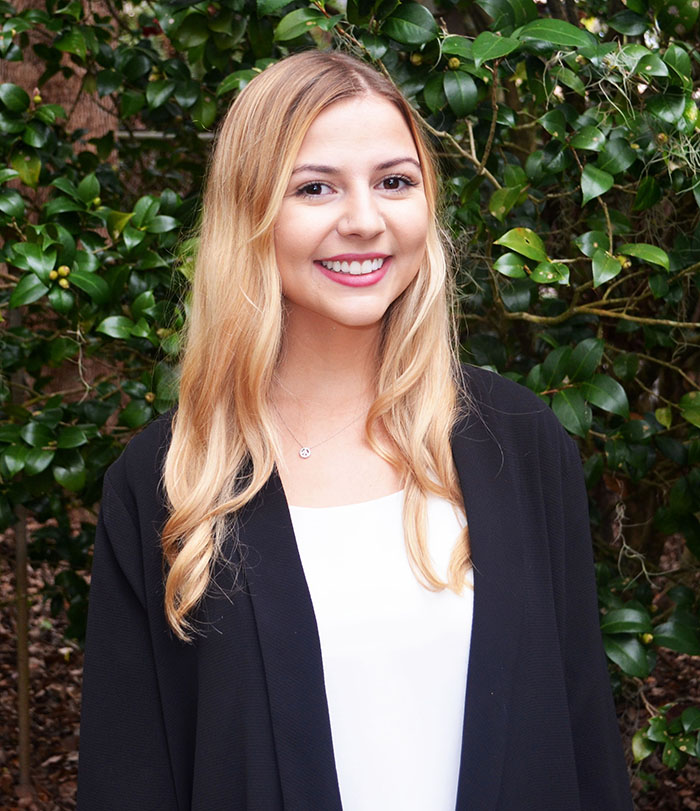

About Me

Hi, I'm Allie! I am born and raised in Winter Park, Fl. I attended college at the University of Florida studying Public Relations.
However, I catered to my creativity by studying Art as an outside concentration. Since graduating in December 2017, I have begun a Master of Arts
in Mass Communication specializing in Web Design. Web Design has always been fascinating to me. Having the ability to create visually effective web pages is a dream.
Therefore, I created this website to showcase my design skills and coding skills.
Over the course of my Master's program, I plan on adding more work examples, and of course editing this site as I advance in web development!
Thank you for visiting!
Best, Allie